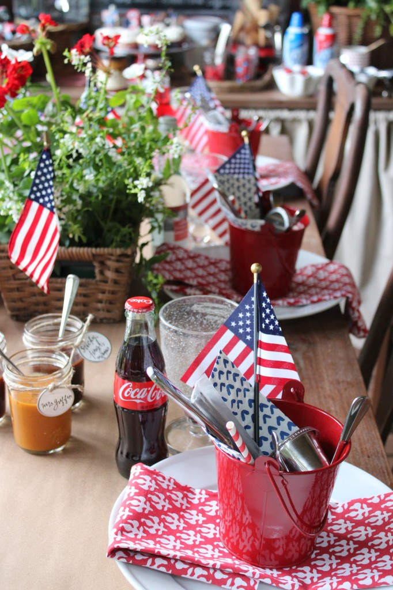
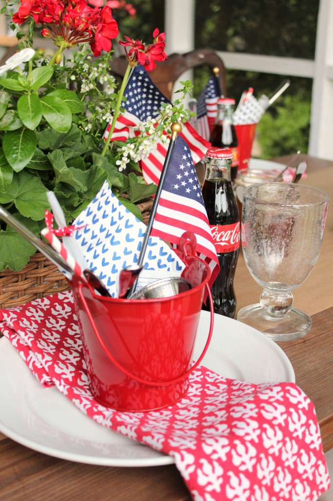

.png)
.PNG)
.PNG)
.PNG)
.PNG)
.PNG)
.JPG)
.JPG)
.PNG)
.PNG)



I was going to say …
Here are the photos from our 4th of July.
And then just show you the pictures.
But then I thought …
You might have questions.
So there are things I need to share with you as you look through the post. Starting with…
What’s in the bucket?
But before I answer that, you have to understand the menu for the lunch.
(Because the bucket doesn’t make any sense without the menu.)

And you might have a question about why we had that menu…
Last year we had hamburgers for the 4th (much easier to prepare.) But this year we had a watermelon and an abundance of fresh corn that we needed to use, so I wanted something that would go with them. Barbequed ribs seemed a better choice than burgers. (Sorry for the fast fuzzy food photos…everyone was ready to eat.)
And you might have a question about that potato salad…
Our daughter made it with a recipe from here. (If you make it, cut the dressing part in half. It made waaay too much.)
Okay now that you understand the menu, I can go back to talking about the bucket. 🙂
Extra napkin, silverware, sparkler, flag, Wet Ones (for extra messy hands after barbequed ribs), and melted butter (for corn). I forgot to include the corn cob holders in the photograph below… darn it! They were in the bucket as well.
See, doesn’t it make more sense now that you understand the menu?
And the menu also explains why these sauces were on the table…
Okay, now here’s the entire table.
And I don’t think I have to explain any more…
because an ice cream bar is pretty self explanatory. 🙂
You can find the recipe from my post here….(just in case you were going to ask about that. 🙂 )
No…you are not allowed to ask a question about the big jar.
(But I will tell you the red stand came from here, although I am only seeing it in ivory right now.)
Cherries, crushed oreos, M&M’s, and nut topping…
(If you were wondering what were all the toppings in the mason jars.)
Our daughter made the cupcakes with my mother-in-law using a recipe from Back in the Day Bakery.
The cupcake liners and toppers?
You can find them here.
(but mine came from the Williams-Sonoma outlet.)
And that was our 4th of July meal. The weather yesterday was absolutely gorgeous…temps in the eighties with low low humidity. If you live in the South, you probably know what a rare treat that was for July. We had the doors open to the porch the entire day. 🙂
In the evening we drove around to see fireworks then returned home to play with a few in our own yard. It was a fun 4th. An extra special treat was when Rhoda from Southern Hospitality included our home in her 4th of July post. Wasn’t that sweet of her?! So if you are visiting here from her lovely site, welcome!
I hope all of you have a great weekend and continue to celebrate our wonderful country. I plan to eat a few leftovers, do a little bit of painting, and answer a whole bunch of emails. 🙂
Enjoy your weekend!


.PNG)
I always love looking at your home decorated for the holidays. You are so creative and everything is always perfect looking!! Such an inspiration to everyone.
————————————————————————-
Thank you so much for your very kind words Stephanie! Holidays are always so much fun to decorate for. 🙂
Kelly
Kelly – As usual your house, table settings/decorations, and meal all looked wonderful for the 4th. So many ideas to copy for future decorations or party ideas at my house. :-> As others have mentioned…I loved the red buckets. I was so excited when I saw those blue and white napkins in your red buckets though. I bought those at Target last year and have them sitting out right now on my kitchen island with my other 4th of July decorations. I am kind of proud of myself for buying something and then using it….without actually copying or replicating something you did. Great minds must think alike. Or better yet your style is really influencing me (and my buying decisions)….like you do with so many others! Take care!
———————————————————————-
Too funny! Yes, great minds DO think alike. It would be a dangerous thing if I am influencing your buying decisions because glory do I love to shop!! Thank you for your compliments. The red buckets came from Michaels in their $1 things several years ago…in case you want to shop for them. LOL
Kelly
Everything looks festive as usual! Looks like y’all had a wonderful 4th. The ice cream bar is delish!!! Our’s was spent at the lake. It’s an extra special weekend for us as we celebrate my nephew’s birthday on the 3rd, then the 4th, and ended with my birthday on the 5th. Best gift was spending time with family. Hearing my son laugh was the best!
———————————————————————-
Good grief at the celebrations! A belated happy birthday to you Jayne! It sounds like you had a great weekend. 🙂
Kelly
I was sure no one would be posting until today, so I’m just getting here. Great table, great menu, great weather – you must have been smiling all day! So glad you had a beauty of a day!
We had a quiet day, all our kids were together in Texas, checking out our oldest daughter’s new digs. So we got fried chicken from the grocers, along with salad and French bread, and quite enjoyed the change of menu! A neighbor invited all of us old folks (about 11 of us) down to their driveway to visit, nibble snacks and desserts, and watch their neighbor shoot off $500 worth of fireworks. We enjoyed the coolish evening chatting and agreeing that we are happy to not fight crowds and traffic at the public displays these days! FYI, a lot of the costly booms ended up duds – poor guy!
———————————————————————
It sounds like you had a great 4th Marianne! I am really thinking we may do fried chicken next year (from somewhere…I make too big of a mess when I fry it!) How nice that your neighbor hosted you all to watch the fireworks. I know the person who was shooting them off must have been so disappointed when some didn’t work…especially when you consider what they cost. Fried chicken, good company, snacks, desserts, fireworks…yes, you had a good holiday!
Kelly
Simply adorable!
I just love all of the details that you add. I am new to your blog, do you mind if I ask you what color you used on you wicker sets? I just love the contrast with the red.
Thank you! Amy
————————————————————————
Hi Amy! So glad you decided to visit here. 🙂 The wicker is either painted Martin Senour’s Pelham Gray or Lowes Valspar’s Lyndhurst Timber. I cannot remember which one, and they look to be almost the same shade – so either would have worked. And it is not really a gray – more of a green undertoned khaki. The color works really well with red (and yellow…and orange…)
Hope you will visit again!
Kelly
I discovered your blog via Southern Hospitality and am so glad that I did! What a delight browsing around! I love your style!
———————————————————————-
Yay! Rhoda’s blog led you here! Thank you for making the jump over to Talk of the House. I am thrilled you are finding posts here that you enjoy. Please come back to visit again any time you like Pat. 🙂
Kelly
K. I may just be willing to pay a premium and buy your neighbors house. BUT in the contract would be invites by you ALL the time!
———————————————————————
Very funny! But you are welcome to just come on over and visit. (I can tell you that the neighbors aren’t willing to sell.)
Hope you had a great holiday weekend Linda!
Kelly
Oh my love it all! It all looks amazing. The buckets are perfect and I especially love the cones in the glass jar. Gotta do that! We, too, had the perfect July 4th. Weather here in lower Michigan was spectacular! My hubby smoked pork shoulders on the smoker all day and we enjoyed pulled-pork sandwiches…yummy! He has been doing smoked pork for many years now. It’s gotten quite popular here up north. I know you’ve had it in your parts for a long time. We also had corn on the cob and I did a mixed berry cobbler with ice cream for dessert. Just a great weekend all together! God Bless America!
———————————————————————
I am so happy that you loved all the 4th of July decorating Patty! Your holiday sounded great, and we all love pulled pork sandwiches around here. Yum! I bet your mixed berry cobbler with ICE CREAM ( 🙂 ) was delicious.
Kelly
What a fabulous heart of hospitality you have! Beautiful table sitting. The little red buckets are adorable — what a great idea! And your desert bar looks absolutely delicious! We had smoked ribs for the 4th with baked beans and cole slaw. My family would think I was unpatriotic if it was anthing else. 😉
————————————————————————–
The buckets were so handy…and I just HAD to use them since they were red! LOL Your menu also sounds very yummy. I meant to do the baked beans with ours too but totally forgot about them! Thank you for your sweet comment on the post. 🙂
Kelly
Yes, indeed, I did find your blog through Rhoda’s Southern Hospitality. I’m living vicariously through all the July 4th decor – and yours is a treat! – since I’m still settling into my new home. I’ve already gone backwards to see how your home has evolved – what a great effort! Beautifully done, and I’m so delighted to have found your blog. The link is now saved firmly on my desktop with just a handful of other special ones so I can return often for inspiration. Enjoy the rest of this gorgeous weekend!
———————————————————————–
Thank you for popping over from Rhoda’s place, Leslie! I am glad you are reading all the old posts here too. Congratulations on your new home, and I hope you can find some ideas here that you can use. And thank you for saving the link so that you can visit the blog again. I will look forward to hearing from you in the future! 🙂
Kelly
You have out done yourself again. I love the 4th of July and Halloween. Can’t decide which one more. Love decorating for both. Hubs had to work this holiday so I didn’t decorate this year. Spent the day with friends but enjoyed myself. Have been waiting a month for my son to pop the big question to his girlfriend as he did on the 4th of July. She said “YES” we are all so excited. I will have another daughter. Yeah!!! They are planning the wedding in Florida where they live. He lives near Jacksonville and she lives somewhere near there. She is looking at a plantation in Orange Park, the Yacht Club or one other place all three are beautiful can’t wait to see what she picks. I am sure we will be headed that way a lot. I might have to get some pointers from you on places to stop and shop. Enjoy the rest of your weekend. I am going to be dreaming of wedding plans.
————————————————————————–
Cindy thank you so much! I am sorry your husband had to work for the holiday. Not fun! But congratulations on your son’s engagement! A Florida wedding! My daughter would say, “It should be at Disney.” (She truly would.) And I would say “It needs to be at Elizabeth Pointe Lodge.” There are soooo many ideas for weddings on Pinterest now, one could get really lost. Have fun with the planning!
Kelly
Love your table setting! Where did you get the cute red buckets? Would love to have them for Labor Day. Also where to you get you check fabric for curtains? Planning on making some black and white check but no luck on line. Please keep up the good work. Love your home!!!
———————————————————————–
Hi Mary! The red buckets came from Michaels a number of years ago. They were in the “discount” section at the time, and I bought a whole bunch of them. They work great for Valentine’s Day as well. There are a lot of checks in the house, so I am not sure which window curtain you are specifically wanting. The ones in daughter’s room and the playroom came as drapes from Country Curtains, and I lined them. The fabric in the kitchen and dining room (the red buffalo check) came from here: http://forsythfabrics.com/collections/checks-plaids-houndstooth/products/4-check-red
and the checked fabric on the very long drapes in the family room came from here: http://www.decorativefabricsdirect.com/Roth_Tompkins_LYME_LINEN_WHITE_Fabric_p/6624113.htm
Ikea carries some black and white checked fabric in their stores, but they do not carry it online. I just bought it in their large check version in Atlanta, and the price was great.
Kelly
There may have been many 4th of July blogs out there but yours is my favorite by far.
Perfection! Thank you.
———————————————————————-
Wow, thank you Kate! What a super sweet compliment!
Hope your holiday weekend was a good one. 🙂
Kelly
Oh my Gosh Kelly, you are such a good hostess. You do know how to spoil your family. My mouth is watering just looking at your wonderful post. From those scrumptious ribs all the way to the adorable cupcakes your daughter made, I would have loved being a guess at your table. Again…I Love you Porch! I will have to try that potato salad recipe. Sounds yummy. Bacon, did I read bacon? YUMO!! So, for the 2 lbs. potatoes, that amount of dressing was an overload? Can’t imagine it would be too much for 2lbs. Hmmm…. Our celebration was at my sister in law’s. She always hosts the 4th. Tradition. The weather was beautiful and we brought hoodies out right after dinner. It was perfect. No one swam as she has a pool too, but the ever popular bean bag toss game was endless. A wonderful fire was going in her fire pit as we visited. We had BBQ chicken, potato salad, baked beans, pasta salad, and strawberry pretzel salad. Cupcakes and peanut butter rice crispy treats with chocolate frosting on them was our dessert. Everyone brought something to share, mine was the strawberry pretzel salad. Fireworks were watched from our home, as we are on a hillside and we can see them from our front yard. Can’t believe the 4th has come and gone. Take in the days ahead…Teacher Kelly. Here is hoping July doesn’t go by so quickly, as June did.
Debra
———————————————————————-
That salad WAS yummy, and yes, it did have bacon. Believe me..it was too much dressing. You could just make it all, and then add it a few spoonfuls at a time (not the entire amount just dumped in at once.) Your family’s menu sounded perfect. I would have wanted some of all of it! (especially the pretzel salad.)
I pray that July creeps slowly by since we go back to work this month. 🙁
Kelly
Happy 4th Kelly: Yum, yum and double yum! I thought about ribs as well, but too much was going on that we were regulated to brats, dogs and chicken. Your ingenuity is amazing…those little red buckets were genius. What a great assortment of needed items for such a meal! Awesome! I can only hope I will be able to remember that for future get togethers. The house once again looked perfect and so inviting. Happy birthday America! May you live on in great glory! Blessings….Gail
———————————————————————–
I think brats, dogs, and chicken sounds delicious! (And in my head I am thinking about going the route with chicken next year…) Thank you for the compliments on the party. Yes, happy birthday to America!
Kelly
Hi Kelly, What a fun 4th celebration! I love the little buckets full of fun supplies! This 4th hubby and I made Ina’s confetti corn instead of “on the cob” and it was SOO delicious! here is a link for the recipe – http://www.foodnetwork.com/recipes/ina-garten/confetti-corn-recipe4.html. It is definitely worth trying! Thanks for all of the inspiration 🙂
Megan
———————————————————————–
I am so glad you liked the buckets! Thanks Megan! And thank you for the link to the corn recipe. I will have to give that one a try some time soon. 🙂
Kelly
So, I was scrolling through facebook and I saw a photo that I thought had to be your house….and it was!!!! Southern Hospitality! AWESOME!!! You go, girl! I loved your 4th of July post. Everything was beautiful and fun, as always!
———————————————————————–
Yes, it WAS my house! I was sooo tickled that Rhoda included some rooms from here for her post. She is so sweet and supportive of other bloggers. Love her! Glad you enjoyed my 4th of July post too (even if it was on the 5th when I posted it.LOL)
Hope you had a good holiday!
Kelly
Great post. Great food. Great decorating. Great party–All honoring our great nation and the brave founders who fought for our great freedoms.
Thanks, Kelly, for all your inspiration.
———————————————————————
Yes, it was indeed all honoring our great nation and the great people who were great thinkers!
Kelly
Kelly,
Your menu sounds delicious. The table and buffet looks inviting, as usual. We had a very fun 4th of July and we must have gotten some of your humidity. We usually don’t have too much humidity, but yesterday was warm and humid. All I could think was that my skin would be appreciative of the humidity. 🙂
Enjoy the rest of your weekend.
xo,
Karen
———————————————————————
That potato salad was really good (first time trying out the recipe.) Glad you had a fun 4th! And also glad you had our humidity. We like it soooo much better when it is gone, but it was back today and made it seem so much hotter.
It may do wonders for your skin, but it is a killer on my hair…straight as a stick!
Kelly
Everything looks awesome, creative & festive, all done in complete Kelly-style! Thanks for continuing to inspire 🙂
———————————————————————-
“Kelly-style”…you are too funny DeeDee! It just looks like that because of all the red. 🙂 (You all know I can’t decorate unless it involves that color.)
Glad you enjoyed the post!
Kelly
I love your porch!!!
———————————————————————
It’s my favorite room in the house too. Thank you Leslie!
Kelly
Everything looks so festive, fun, and delicious! Love your bucket idea!
————————————————————————
Thank you so much Jill! The bucket worked out great holding all the “necessary” items for the lunch.
Kelly
Someday I am going to get my act together and have a beautifully planned meal and table like you….someday….We had a little celebration yesterday with our two youngest grandchildren…they were more interested in picking blackberries from the garden than anything else. I used paper plates (gasp!), something I rarely do, and red checked napkins, but not much else very 4th like. I love the bucket idea and someday (there’s that word again) I am going to fill them just like you!
I agree with Andrea, I love your porch! Mine is not used as much as I like and I have removed a lot of items because they seem to be constantly covered in pollen/dust and I got tired of always having to wipe things down and vacuum….along with all your other talents you must be a super housekeeper.
———————————————————————
Yes you will do a meal like this! Your best friend will be a list to write down the ideas and what you need to buy from the grocery store. 🙂 Just follow your list and you can do it. Nothing wrong with paper plates…I thought of using some here. A few years ago, I bought plastic plates that look exactly like the old fashioned white paper plates. I thought the idea was hilarious! (No one else in the family thought they were that clever though.)
Yes, I do have to clean. The porch requires weekly vacuuming and wiping off with a wet cloth..but it is a room I like so much, I don’t mind doing it. Now our messy messy office is a whole ‘nother story….I don’t even want to venture in there!
Kelly
Kelly,
Your menu looks yummy and every detail thought of. Thanks for sharing it all with us. My family is at the lake house this weekend and we did your hamburger bar from last year to celebrate yesterday.
———————————————————————–
How wonderful to be at a lake this weekend!! I bet your hamburger bar turned out terrific and that everyone was full afterwards. I could go for a bacon cheeseburger right now! yum….
Kelly
Another beautiful post Kelly. Everything looks so pretty.
We had a great time yesterday. Was gonna do the sundae bar but ended up getting the peanut butter blizzard cake. We celebrated the 4th. and also our son-in-love’s birthday. Peanut butter cups are his favorite thing ever so we will do our sundae bar on a whim one week-end soon.
Enjoy the rest of your week-end. We are doing some painting and trimming some shrubbery. Blessings, Becky
————————————————————————–
Thank you Becky. It sounds like you had a fun 4th too! I have never had a peanut butter blizzard cake, but it sounds delicious (and like something our middle child would love!) I hope you get to do your sundae bar soon!
Kelly
You are not going to believe this….>I have another question….I love your drinking glasses. Would you mind to share your source for them? BTW…..your porch is amazing. I could live there!!!!!
——————————————————————–
Man…I thought I had thought of everything you all would ask! LOL The water goblets are made by Tag, and they are called Bubble Glasses. I had a link to the source at Amazon in this post: http://www.talkofthehouse.com/more-touches-of-spring-around-here/ but they seem to be currently out of stock. There are probably other sources around the internet if you do a little searching.
Thank you for the compliments on the porch! You could certainly live there while the temps were as nice as they were for the 4th, but the humidity was back today (Sunday) and not quite as comfortable out there. 🙁
Kelly
Does the basket holding the sodas on the ice cream bar have a metal liner? Where is that from?
Love your ideas, home, and blog!!
———————————————————————–
Yes, it does have a metal liner. I purchased ours at a local shop, but I think I have located an online source here:
http://www.cspost.com/view.php?item=8512 It is called the rattan party bucket. Mine would be the small size.
It has come in handy for a lot of different things…from a holder for drinks, to a salad bowl, to a planter. I love it!
So happy you are enjoying the blog Cheryl. 🙂 Hope this info helps.
Kelly
Everything looks so beautiful! What fun ideas for the ice cream bar. Thank you for sharing!
————————————————————————
Goodness…thank you! An ice cream bar is fun AND delicious. It was a great way to share something sweet for the 4th of July.
Kelly
Isn’t summer wonderful? And a picnic/BBQ is the BEST! Enjoyed your post – thank you!
———————————————————————-
Yes, it is! I am glad you liked the photos of our lunch. Thank you for visiting the blog. 🙂
Kelly